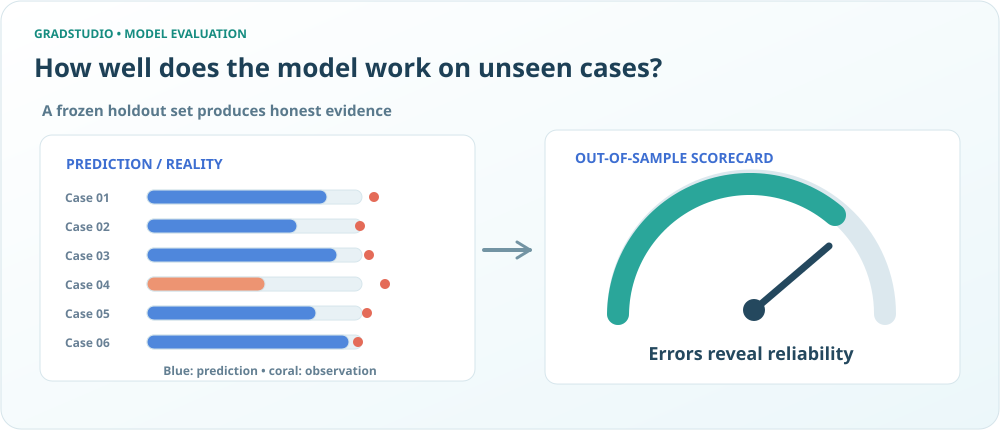
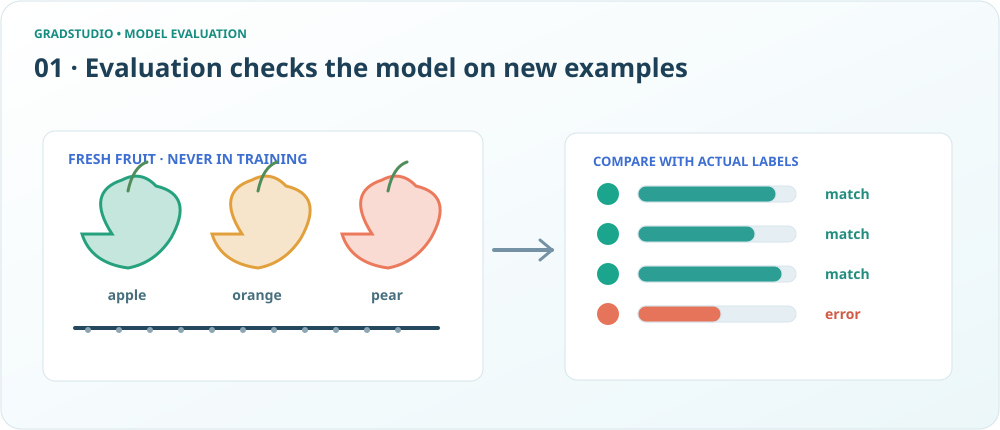
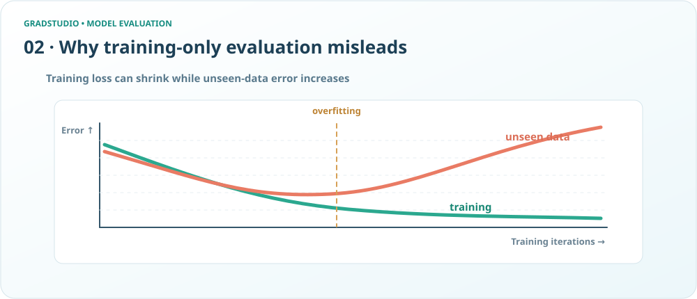
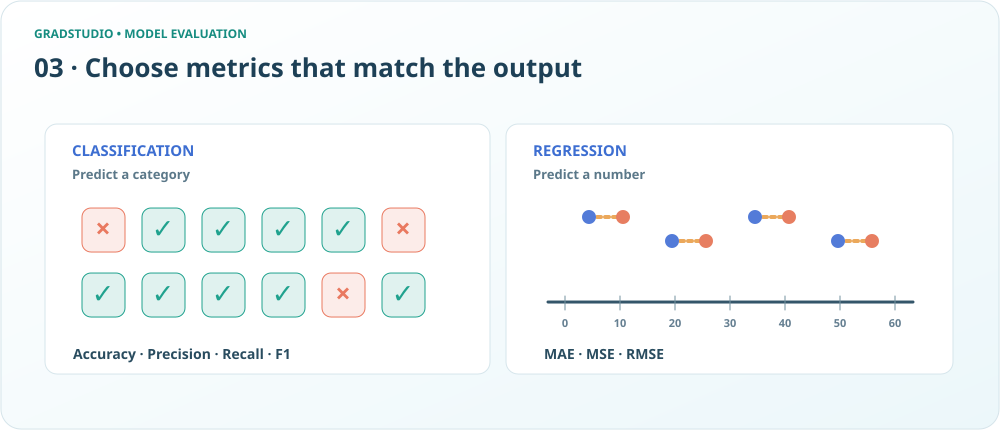
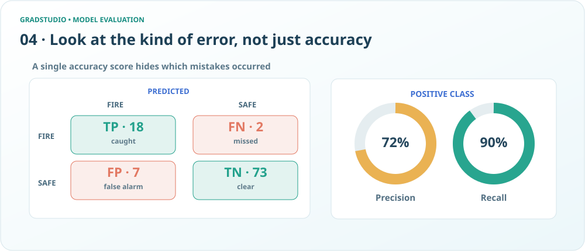
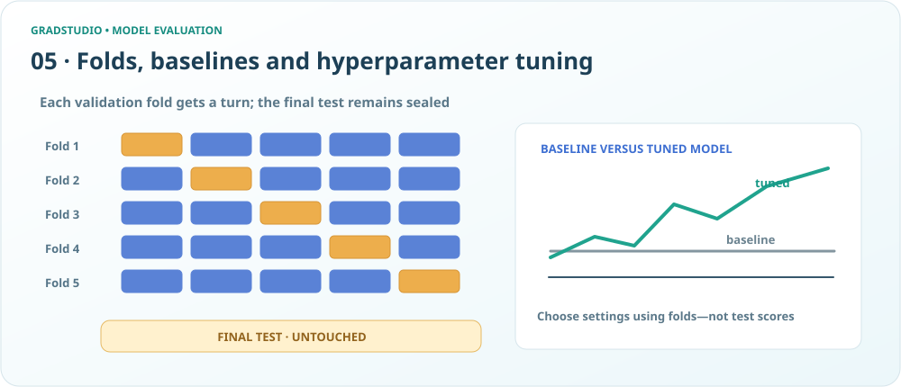
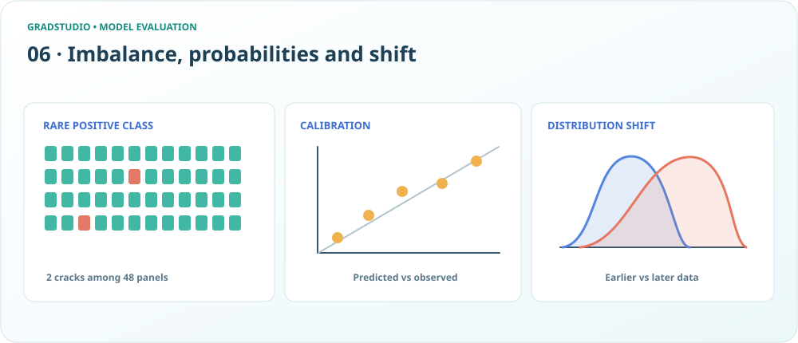
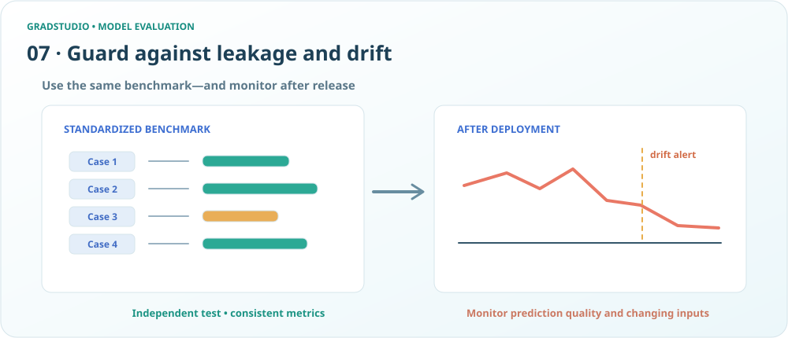

Model Evaluation · Agent 2 visual staging
A fair evaluation beyond the training notebook

Held-out predictions compared against observed outcomes drive an evaluation gauge.
Predictions checked against new fruit

Fruit examples travel through a model and predictions are checked against true labels.
Training and unseen-data error diverge

A two-line chart shows overfitting: training loss continues down while error on unseen data starts to rise.
Classification differs from regression

Category decisions versus numerical prediction errors, with corresponding metrics.
Confusion matrix with precision and recall

A 2x2 confusion matrix with TP FN FP TN counts and precision/recall rings.
Cross validation folds and reserved test

Five fold rows rotate validation subsets; a baseline and tuning curve are checked without touching the final test.
Imbalance calibration and distribution shift

Solar-cell defect grid, reliability calibration plot and two input distribution curves.
Fair benchmark and production drift alert

A common benchmark is used before launch; a production trace declines and drift alert appears.